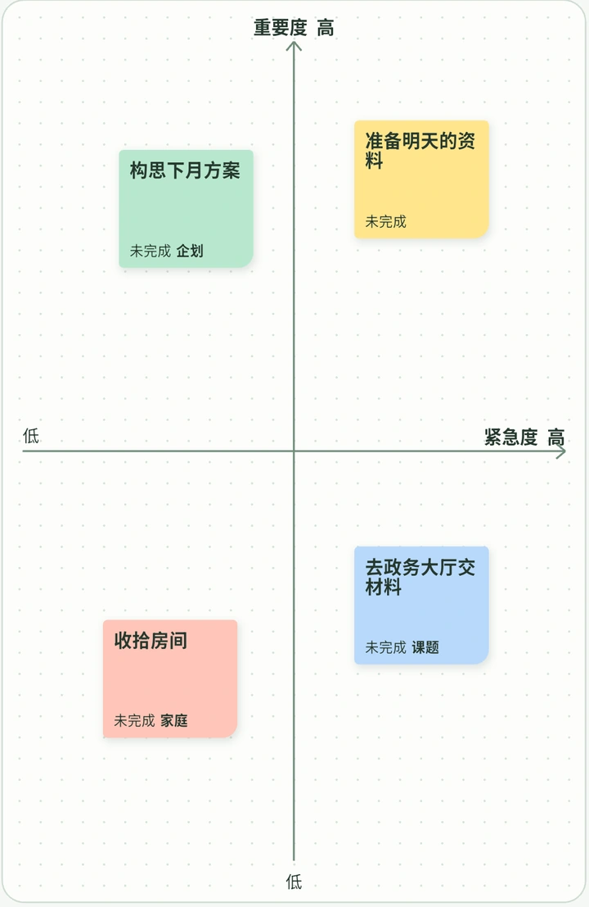
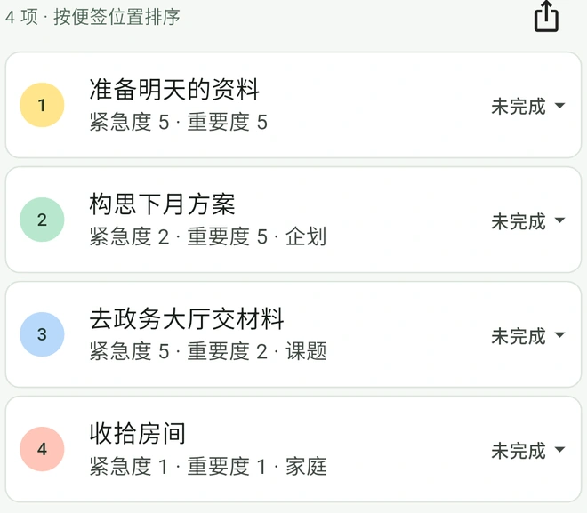

从便签到待办清单
-
写下要做的事
比如「准备明天的资料」。一件事写在一张便签上。
-
把便签贴到看板上
紧急的往右放，重要的往上放。拖动便签，就能对照其他任务调整位置。
-
查看待办清单
清单会根据便签的位置自动排序。开始处理后，还可以记录进度。

常见问题
紧急度和重要度有什么区别？
紧急度表示一件事需要多快处理；重要度表示它对结果或目标的影响有多大。例如，明天要用的资料可以放在右上角，下个月的重要方案可以放在左上角。
待办任务的优先级是怎么排的？
PetaTodo 会把便签位置对应的紧急度和重要度相加，分数越高越靠前。分数相同时，重要度高的任务优先。拖动看板上的便签即可更新排序。
需要注册账号吗？
无需注册即可使用。看板、便签和附件保存在设备上，PetaTodo 不会将这些数据发送到外部服务器。
可以怎样整理和导出待办？
可以用颜色和标签分类，在便签里添加带格式的备注和多个附件。进度分为「未完成」「进行中」「已完成」，已完成的任务会保留在待办清单中。待办清单可导出为 CSV、PDF 或 PNG，看板可导出为 PDF 或 PNG。